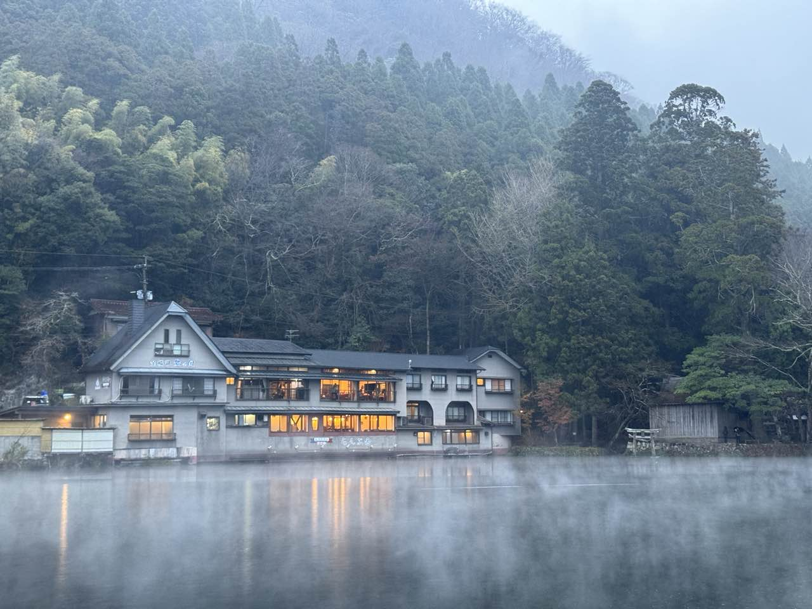
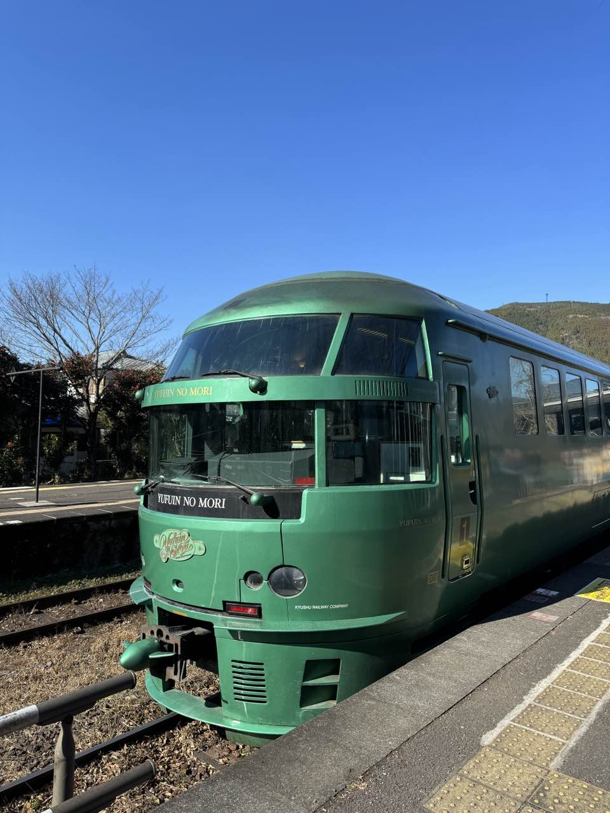
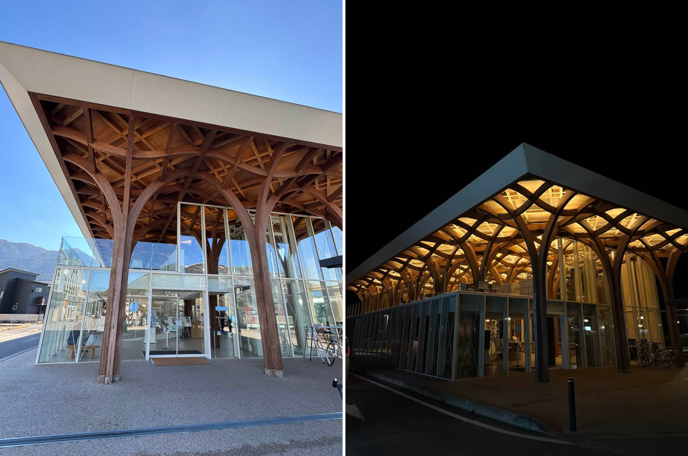
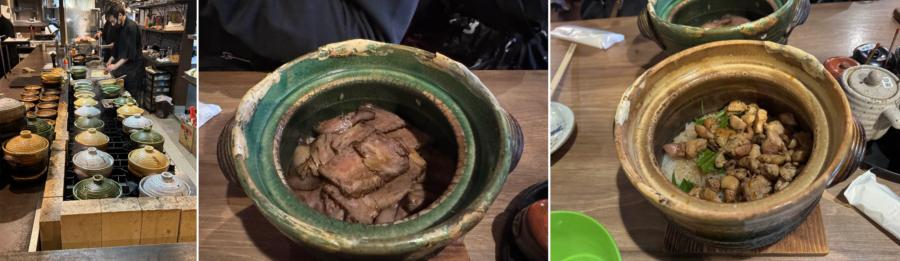
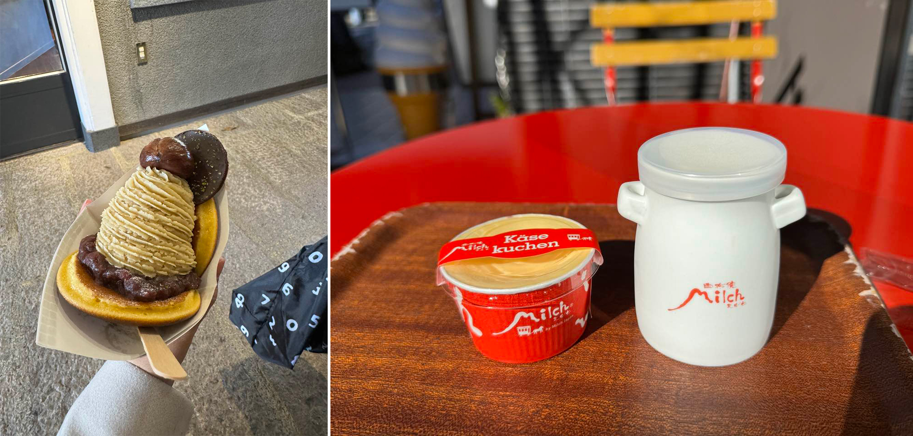
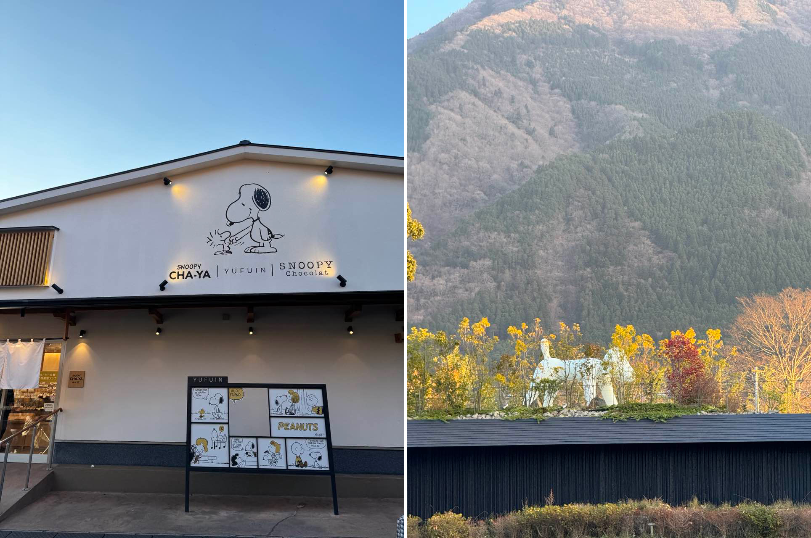
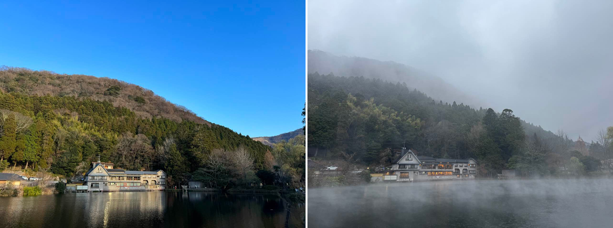
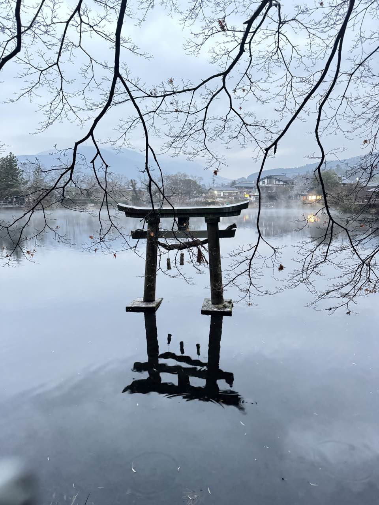

 |
第一次踏上九州，心裡只有一個念頭：「我怎麼沒有早點來！」 過去的日本旅行幾乎都獻給大阪和東京，直到這次造訪九州，才發現福岡機場距離市區僅約20分鐘車程，移動超級省時，旅遊節奏一下子就輕鬆起來。
說到九州，絕對不能錯過的經典景點就是—由布院。這裡是日本票選「上班族女子最愛的療癒小鎮」，光是名字就讓人充滿期待。出發前我預約了超人氣觀光列車「由布院之森」。這班列車班次不多，熱門時段一位難求，一定要提早搶票、網路劃位，而且一定要提前換票（非常重要！）。
當天經過冗長的排隊換票，超級驚險就在車門關上的前一秒搭上列車。由布院之森本身就是個會移動的景點，不同車廂有不同設計，其中一節車廂販售飲料、輕食與限定周邊商品，大面的觀景窗讓沿途山林田野一覽無遺，光是坐在車上就已經開始享受旅程，點杯啤酒為剛剛驚險上車壓壓驚。
 |
抵達由布院出站後，映入眼簾的是氣勢十足的由布岳，旁邊還有設計感十足的遊客服務中心，第一眼就讓人愛上這座小鎮。
 |
抵達時已接近中午，強烈建議一下車就直奔必吃排隊名店—由布釜飯心。這家有兩間分店，另一間在金鱗湖附近。釜飯提供豐後牛、地雞與鰻魚三種口味，個人私心推薦地雞，香氣與口感都更勝一籌。
 |
吃飽後慢慢散步前往金鱗湖，沿途會經過超有名的B-speak 奶油捲，也是人氣伴手禮之一。我個人沒有驚艷到，但在甜點選擇爆多的日本，能紅成這樣也算實力派了。湯之坪街道上一路都是誘惑，銅鑼燒、布丁、可樂餅、炸雞香氣不斷，邊走邊吃完全停不下來。
 |
接著來到童話感滿滿的「由布院花卉村」，以英國童話為主題，裡面全是可愛小店，還能和貓頭鷹合照、餵小羊，療癒指數破表。園區內還有Snoopy茶屋與Miffy餐廳，完全是拍照打卡天堂。
這邊還有美術館，館內展示奈良美智的「大白狗」，可惜我到訪當天剛好休館，只能留下一點遺憾，當作下次再訪的理由。
 |
最後到金鱗湖，湖雖然不大，但給人一種清幽的感覺。白天看金麟湖會覺得小小的，沒什麼特別的，但之所以選擇在由布院住一晚，正是為了那片「夢幻冒煙的金鱗湖」。
 |
 |
金鱗湖會出現霧氣，是因為湖水同時含有溫泉水與湧泉，溫差造成水面煙霧，通常清晨最容易看到。隔天清晨我忍著睡意獨自來到湖畔，跟前一天看到得湖景完全不同。雖然下著大雨，但整個湖面彷彿套上了一層濾鏡，霧氣繚繞中多了幾分蕭瑟與詩意，美得不真實。那一刻，只覺得早起太值得了！
短短兩天一夜，卻讓我深刻感受到由布院的美好：有美食、有童話小鎮的奇幻氛圍，也有寧靜湖光與山色。這裡的步調緩慢，卻讓人充電滿滿。若要用一句話總結，那就是「來過一次，就會期待下一次」。
最後溫馨提醒：
1. 由布院不大，如果行程趕，可以安排一日遊。
2. 若想看冒煙夢幻的金鱗湖，建議可安排兩天一夜，最佳觀賞期為每年11月至隔年3月的清晨。
3. 因為由布院不大，所以房源不多，建議要提早訂房。